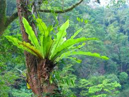
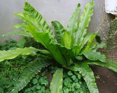
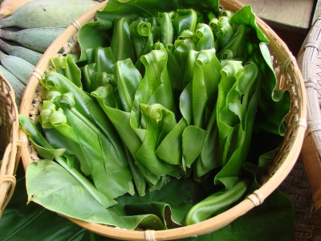

埔墘國小生態園導覽系統
埔墘國小生態園導覽系統
埔墘國小生態園導覽系統
山蘇---野味佳餚
科別:鐵角蕨科
野外踏青，森林裡的大樹如樟樹、佳冬樹枝椏交叉處、大石頭邊，甚至在老宅院裡的龍眼樹和蓮霧樹上都可以看到山蘇的蹤跡。因為它的耐陰性強，終年常綠，故很適合作室內盆栽及造景之用。
早期原住民族經常栽摘取山蘇剛生長出的嫩芽煮食，味道脆嫩可口，現已成為餐館的名菜，甚至有農夫大面積的栽培，因為它耐水性佳，少病蟲害，抗天然災害能力強，而且夏秋生長快，預料將會成為夏秋蔬菜的新選擇。
野生的山蘇常坐落在樹枝上，遠望上去像是鳥巢一般，所以山蘇又叫鳥巢蕨，它漏斗狀的造型，就像是一個可以接收雨水、落葉和灰塵之收集槽。鳥巢狀結構底部的莖及生長點，被覆著許多鱗片與氣生根，除保護幼芽外，尚可保存水分，葉片所蒐集到的腐植質就是貯藏在這裡，供其生存所需不予匱乏，甚至可以供養其他植物。
 充電區
充電區
●學名：Asplenium australasiuum Hook
●別名:南洋杉蘇花、鳥巢蕨
●科別:鐵角蕨科
●原產地:台灣亦分布亞洲熱帶地區
●習性:著生、岩生、葉覆瓦狀排列、外型似鳥巢狀、著生於林下或林緣的樹幹或岩石上
圖片
  
參考資料:
行政院農業委員會網站
意見回饋
建議使用Google Chrome瀏覽